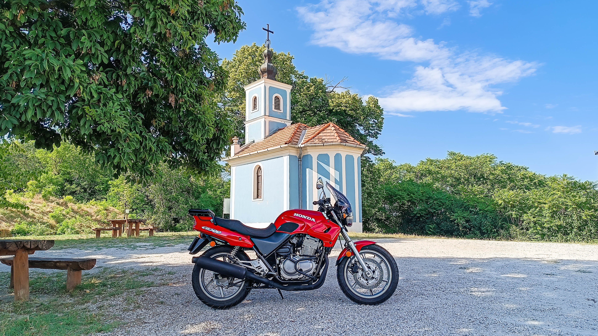
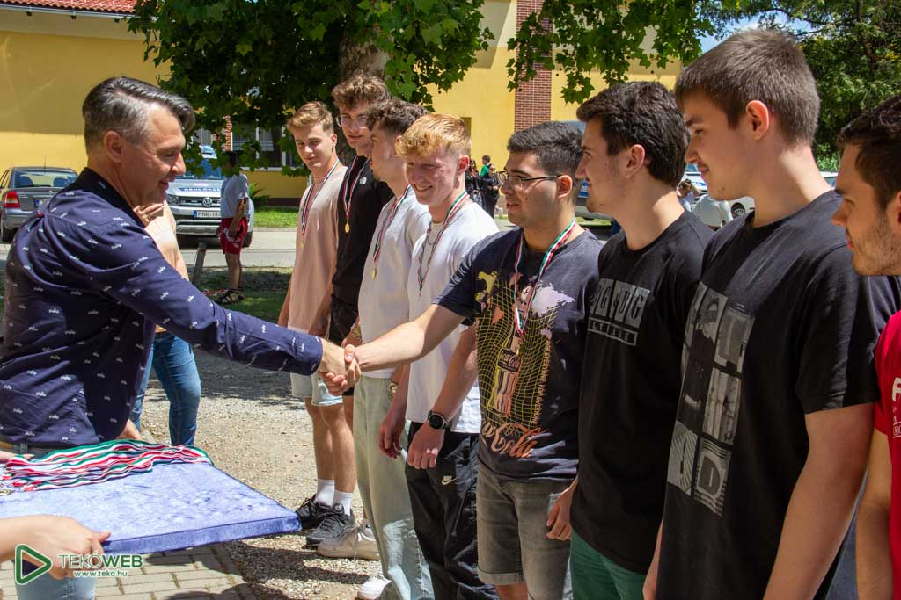
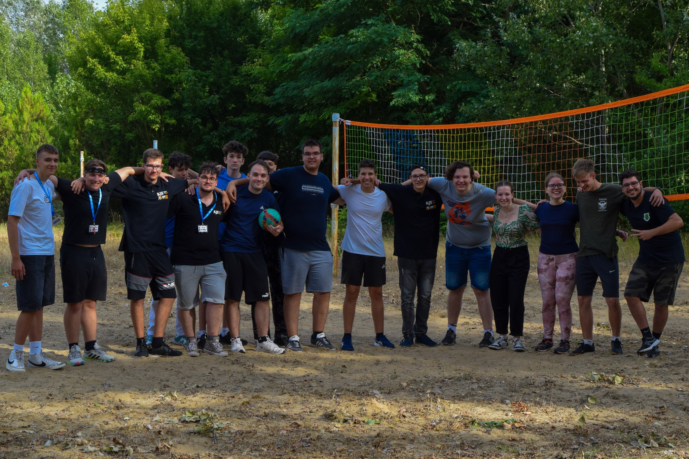
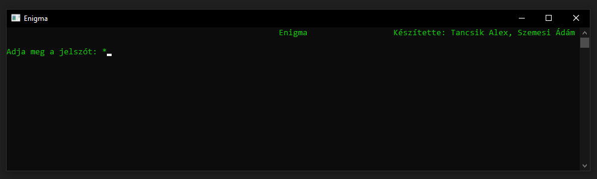
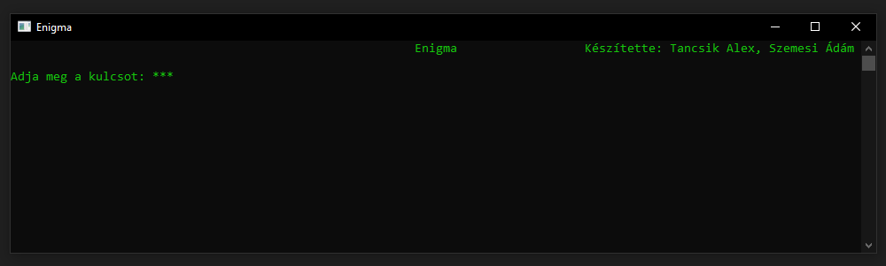
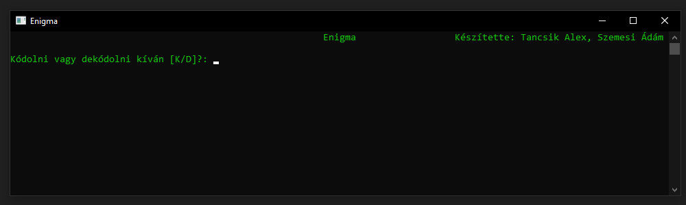
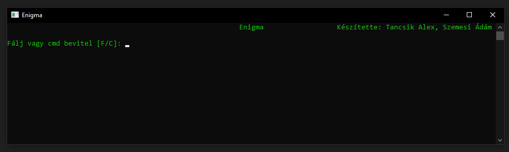
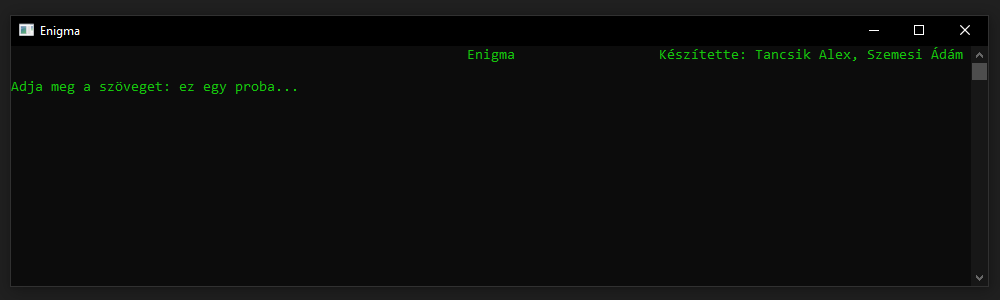
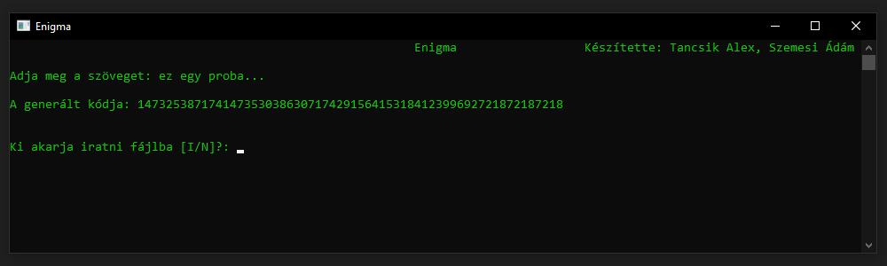

Üdvözöllek a weboldalamon! Ezt az oldalt azért készítettem, hogy bemutassam magam, a projektjeimet, a végzettségeimet és a legfontosabb tulajdonságaimat. Böngészd végig az oldalt, és remélem, hogy érdekes információkat tudsz meg rólam, miközben betekintést nyersz a munkáimba és az érdeklődési köreimbe.
A képek és videok letöltése szigorúan tilos kérem ne tedd!
Ezen az oldalon egy kicsit közelebb engedlek magamhoz: itt megtudhatod, mivel töltöm a szabadidőmet a Hobbik menüpont alatt, a Rólam részben személyes gondolataimat és jellemzőimet osztom meg, a Végzettségek fül alatt áttekintést kapsz az iskolai tapasztalataimról és képesítéseimről, végül az Elérhetőségek menüpontban megtalálod, hogyan léphetsz velem kapcsolatba — remélem, az oldal böngészése után tisztább képed lesz rólam.
Mindig is sok minden érdekelt, ezért a hobbijaimból sincs hiány. Az egyik legnagyobb szenvedélyem a motorozás – van egy saját motorom, egy Honda CB 500, ami igazi társam az utakon. A szabadság érzése, amit a motorozás ad, számomra semmihez sem fogható.

Nagyon szeretek fotózni és képeket szerkeszteni, mert ez lehetőséget
ad arra, hogy megörökítsem a pillanatokat, és egy kicsit más szemszögből
mutassam meg a világot.
Emellett a sport is fontos része az életemnek:
gyakran pingpongoztam közép iskolai tanulmányaim alatt az osztálytársaimmal,
illetve a középiskolában a röplabda versenycsapat tagja voltam, ami
rengeteget tanított a csapatmunkáról és a kitartásról.
Egy másik különleges élmény számomra a búvárkodás, hiszen a víz alatti világ felfedezése egészen lenyűgöző. Persze, amikor kikapcsolódásra vágyom, akkor szívesen nézek filmeket és sorozatokat is, mert ezek mindig új történetekkel, izgalmas világokkal ajándékoznak meg.
Összességében a hobbijaimban azt szeretem a legjobban, hogy mindegyik más-más élményt és feltöltődést ad – van, amelyik szabadságot, van, amelyik kreativitást, és van, amelyik közösségi élményt.
Úgy gondolom, nyitott és barátságos ember vagyok. Könnyen megtalálom a közös hangot másokkal, így sok barátom van. Fontos számomra a hűség, ezért mindig kitartok a barátaim mellett, és ugyanezt várom el tőlük is.
Szeretek csapatban dolgozni, számos iskolai projektben vettem már részt. Jó hallgatónak és szervezőnek tartom magam, és általában aktív szerepet vállalok a közös feladatokban és az osztály életében.
Optimista szemléletű vagyok: igyekszem minden helyzetben a pozitív oldalát látni, és a problémák megoldására koncentrálni. Összességében elégedett vagyok önmagammal, és a barátaim szerint a legjobb tulajdonságom a humorérzékem, ami sokszor segít könnyebbé tenni a mindennapokat.
Az első iskolám a kiskunhalasi Szent József Katolikus Általános Iskola és Óvoda volt. Itt kezdtem meg az iskolás éveimet, és nagyon sok szép emléket őrzök ebből az időszakból. Nemcsak tanulni jártam ide, hanem barátokat is szereztem, akikkel együtt nőttünk, játszottunk és fedeztük fel a világot.
A tanítóim és tanáraim mindig türelmesek és segítőkészek voltak, és sokat köszönhetek nekik. Az iskola légköre családias és barátságos volt, aminek köszönhetően igazán otthon éreztem magam. Nagyon sok olyan alapot kaptam itt, ami később is segített a tanulmányaim során.
Megszerezhető végzetségek: (Megszerzett végzetség/ Megszerzendő végzetség)
A középiskolai éveimet a kiskunhalasi II. Rákóczi Ferenc Katolikus Gimnázium és Technikumban töltöttem. Ez az időszak nagyon meghatározó volt számomra, hiszen itt már nemcsak a tanulásról, hanem a jövőmről is komolyabban kellett gondolkodnom.
A Tekoban sok kihívás és feladat várt rám, de közben rengeteg élményt és tapasztalatot is szereztem. Itt mélyítettem el a tudásomat, új barátokat ismertem meg.
Az iskola segített abban, hogy fejlődjek, kitartó legyek és megtaláljam az utamat. A tanáraim sok támogatást adtak, és mindig éreztem, hogy számíthatok rájuk. A Teko számomra nemcsak egy tanulási hely volt, hanem egy olyan szakasz az életemben, ami igazán formált és előre vitt.
Megszerezhető végzetségek: (Megszerzett végzetség/ Megszerzendő végzetség)
| Vezetői engedélyek | |
|---|---|
| B kategoria: | ✅ |
| A2 kategoria: | ✅ |
A portfólió oldalamon betekintést nyerhetsz azokba a területekbe, amelyekkel szívesen foglalkozom és amelyekben folyamatosan fejlődöm. A képszerkesztés részben megmutatom a kreatív oldalamat, ahol a fotók utómunkálata és az egyedi látványvilág kialakítása áll a középpontban. A videóvágás aloldalon megtekintheted az eddigi video projektjeimet (még nincsen sok sajnos).
A webfejlesztés kártyán láthatod, a már elkészült és működő weboldalakat, míg a programozás részben bemutatom azokat a projekteket és megoldásokat, amelyekkel kísérletezem. Célom, hogy ezen az oldalon keresztül átfogó képet kapj a munkáimról és arról, hogyan ötvözöm a kreativitást a technikai tudással.
!A képeimet és videoimat amelyek az oldalon találhatok kérem ne töltsék le vagy használják fel!
Körülbelül két éve kezdtem el foglalkozni a fotózással és a képszerkesztéssel. Azóta, amikor úton vagyok, mindig igyekszem megörökíteni a pillanatokat, hogy később legyenek képeim, amelyeken gyakorolhatok és fejlődhetek. Leginkább a tájképek és a portrék állnak közel hozzám, mert ezekben érzem igazán, hogy ki tudom fejezni a saját látásmódomat.
A szerkesztéshez az Adobe Lightroom Classic programot használom, amely rengeteg lehetőséget ad arra, hogy a fotóim a lehető legjobban visszaadják azt a hangulatot, amit a helyszínen átéltem.
Középiskolás koromban csatlakoztam az iskola stúdiócsapatához, ahol gyorsan elsajátítottam a hangosítás alapjait. A videóvágással először egy 9. osztályos projektmunka során találkoztam, amikor egyik projekt társam és barátom mutatta meg, milyen programot használ ez volt a Video Pad. A projektmunka végeztével sem hagytam abba a videóvágást, és később egy iskolai öko-projekt során már egy másik program segítségével kamatoztattam a megszerzett tudásomat, ez volt az Adobe Premiere Pro amit azota is használok.
A webprogramozást középiskolában kezdtem el heti 1–2 órában tanulni. Már az elején nagyon megtetszett ez a programozási terület, ezért önszorgalomból saját weboldalakat készítettem. Az órákon a feladatokat általában részletesebben dolgoztam ki, mint a többiek, mindig igyekeztem valami újat beépíteni, hogy folyamatosan fejlődjek.
Az alábbiakban bemutatom weboldalaim egy részét. Az első két oldal régebben készült, ezért nem responsive, így elsősorban számítógépen érdemes megtekinteni őket.
A programozás iránti érdeklődésem középiskolában kezdődött, ahol 10. osztálytól szoftverfejlesztő szakon tanultam. Tanulmányaim során több programozási nyelvet is elsajátítottam, többek között a Pythont, a C#-ot, a HTML-t és a JavaScriptet.
Barátommal közösen készítettünk egy orosz rulett játékot Pythonban, majd egy titkosító programot C# nyelven. Az évek alatt számos projektmunkában vettem részt, amelyek során nemcsak szakmai tudásom fejlődött, hanem sok tapasztalatot szereztem a csapatmunkában is.
Most szeretném bemutatni azt a programot, amelyet a korábban említett barátommal közösen fejlesztettünk. Az Enigma egy egyszerű kódoló program, amely a karaktereket egy előre megadott szám alapján „véletlenszerű” számokkal helyettesíti. A későbbi fejlesztések során a program már képes lett arra, hogy szöveget txt fájlból olvasson be, majd a kódolás vagy dekódolás után visszaírja azt egy fájlba. Emellett a program jelszóval és megbízható ellenőrző rendszerrel is rendelkezik, így biztonságosan használható.
     